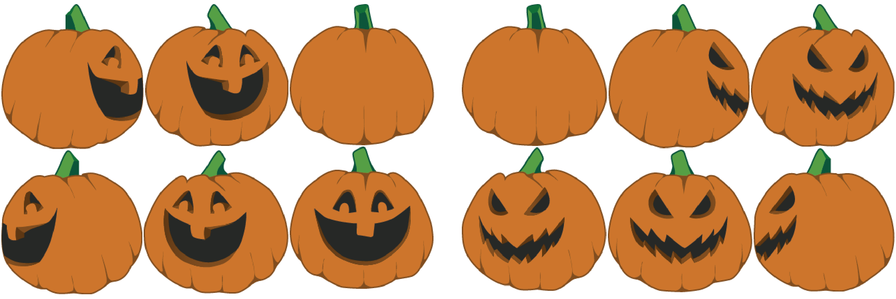

Animation and Sprite Sheets
For this tutorial you are going to learn how to create a simple sprite sheet animation of a spinning jack-o-lantern pumpkin! Once you learn how to create this animation, you are then going to learn how to control the canvas using key codes. Happy Halloween!
Step One: Creating the Canvas and Adding a Ticker
The first step in this tutorial is creating a new stage and choosing the canvas that you want the animation to appear in. You add the canvas into your HTML and give it a specific id. This is so that when you make a new stage in the script, you can identify the different canvas. The next thing we must include is the ticker. The ticker class helps you play the animation's frames at a set interval. Think of the FPS of the ticker as your speed. The higher the number the faster your animation will run. Even though you have defined the ticker now, it will be used to run your animation after you list the information about the sprite sheet in the next step!
Here is the code:
var gStage;
var gData;
var gSpritesheet;
var goodPumpkin;
function ginit() {
gStage = new createjs.Stage(document.getElementById('canvas-one'));
createjs.Ticker.addEventListener("tick", runGoodPumpkin);
createjs.Ticker.setFPS(5);
spinGoodPumpkin();
}
var eStage;
var eData;
var eSpritesheet;
var evilPumpkin;
function einit() {
eStage = new createjs.Stage(document.getElementById('canvas-two'));
createjs.Ticker.addEventListener("tick", runEvilPumpkin);
createjs.Ticker.setFPS(5);
spinEvilPumpkin();
}
Step Two: Creating the Sprite Sheet
Creating a sprite sheet is the essential part of this tutorial. Just think of a sprite sheet as a single image made up of multiple smaller images that when assigned to a certain sequence, becomes animated when it is run. In order to run a sprite sheet you must define three key pieces of information. First, you define which image you are using in the "images" section. You write the name of your png image here. The second step is to define the frames. Each image has a specific position located in the single sprite image and we assign them in an array. The first number is the width, the second number is the height, the third is regX, and the fourth number is regY. Lastly, you define which frames will appear in the animation.
For this project in particular, I made two sprite sheets. One for the good spinning pumpkin and another for the bad spinning pumpkin. To do this, I used a software called Texture Packer. What this software does is takes all of your images and creates a single image as well as the JavaScript code for CreateJS. The software is free, it is very easy to use and can be downloaded online through this link:
As you can see from the screen shots below, I have combined the various images of my rotating pumpkin into a single image. When I exported the single image, I copied and pasted the JavaScript code for my frames and my images into my HTML file between the script tags. I did have some rearranging to do and I also created one single animation defining which frames to use in an array for both the good pumpkin and the bad pumpkin.
Here is the code for the good pumpkin:
function spinGoodPumpkin()
gData = {
"images": ["goodpumpkinsprite.png"],
"frames": [
[415, 207, 206, 204],
[208, 2, 205, 205],
[2, 2, 204, 208],
[415, 2, 207, 203],
[2, 212, 202, 207],
[206, 212, 207, 206],
],
"animations": {
"goodAnimation":[0,1,2,3,4,5],
}
};
gSpritesheet = new createjs.SpriteSheet(gData);
goodPumpkin = new createjs.Sprite(gSpritesheet,'goodAnimation');
goodPumpkin.regY = goodPumpkin.getBounds().height/2;
goodPumpkin.regX = goodPumpkin.getBounds().width/2;
goodPumpkin.y = 150;
goodPumpkin.x = 150;
gStage.addChild(goodPumpkin);
}
function runGoodPumpkin(e) {
gStage.update();
}
Now do the same for the evil pumpkin:
function spinEvilPumpkin()
eData = {
"images": ["evilpumpkinsprite.png"],
"frames": [
[415, 207, 206, 204],
[208, 2, 205, 205],
[2, 2, 204, 208],
[415, 2, 207, 203],
[2, 212, 202, 207],
[206, 212, 207, 206],
],
"animations": {
"evilAnimation":[0,1,2,3,4,5],
}
};
eSpritesheet = new createjs.SpriteSheet(eData);
evilPumpkin = new createjs.Sprite(eSpritesheet,'evilAnimation');
evilPumpkin.regY = evilPumpkin.getBounds().height/2;
evilPumpkin.regX = evilPumpkin.getBounds().width/2;
evilPumpkin.y = 150;
evilPumpkin.x = 150;
eStage.addChild(evilPumpkin);
}
function runEvilPumpkin(e) {
eStage.update();
}
The result below is what would happen when you run the animation. To get the colorful background, you simply add a gradient to the canvases in your main CSS document. Both of these animations are running at the same time and side by side. In the next step we will learn how to layer them using CSS.
Step Three: Layering the Sprites
In order to create the cool effect of this tutorial, both of these animations have to be arranged so that one canvas is layered directly on top of the other. This can be done by adjusting the style of both canvases in your main CSS file. If you set both of the canvases position to absolute they will layer. I always want the good pumpkin to appear on top so I set the z-index to one. Due to the fact that the internal style sheet CSS can overwrite an external style sheet, we can use this to our advantage when changing the z index by key codes.
Here is the code for the main CSS external file:
#canvas-one {
border-bottom: 1px solid #d2d6d5;
background-image: linear-gradient(#5C1F3D, #993366);
position:relative;
}
#canvas-two {
border-bottom: 1px solid red;
background-image: linear-gradient(#5C1F3D, red);
position: relative;
}
Step Four: Changing the Z Index with Key Codes
Now that you have both of the pumpkin animations running, and the canvases properly layered using an external style sheet, it is time to change the z-index using key codes. In the demo below, you can change the good pumpkin into an evil pumpkin by pressing the 'e' key on your keyboard and then change the evil pumpkin into a good pumpkin by pressing the 'g' key on your keyboard. You can make do this with any key on the keyboard as long as you define which one. Each key on the keyboard has a specific number which you can find out HERE!
document.onkeydown = handleKeyDown;
function handleKeyDown(event) {
var index = 0;
switch(event.keyCode){
case 69:
document.getElementById("canvas-four").style.zIndex = index +"1";
document.getElementById("canvas-three").style.zIndex = index;
break;
case 71:
document.getElementById("canvas-three").style.zIndex = index +"1";
document.getElementById("canvas-four").style.zIndex = index;
break
}
}
As you can see in the code, e's key code number is 69 and g's is 71. You can also see that I have create a variable called index and that I have set it equal to 0. When the user presses the 'e' key it will increase the evil canvas' index by one and change the good canvas' index to 0. The opposite happens when the user presses the 'g' key, which makes the good canvas back in front. Update this function and see what happens!
Press the 'e' key for the evil pumpkin and the 'g' key for the good pumpkin: